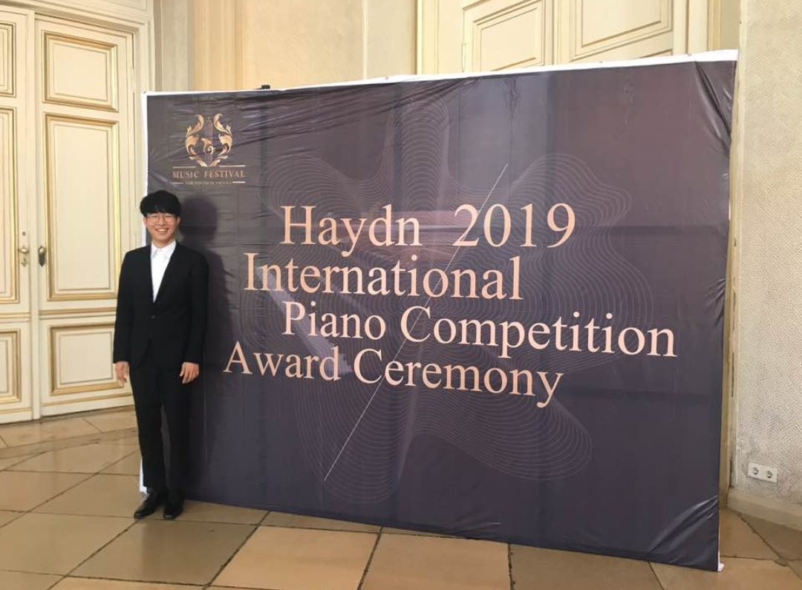

ABOUT
2019년 오스트리아 비엔나의 하이든 국제 피아노 컴페티션에서 Bronze Award를 수상하여 실력을 인정받은 김신종은 유학시절 Palais Auersperg, Quo vadis?, Das Klavier등에서 다수의 독주회와 실내악 연주활동으로 다양한 무대경험을 쌓아왔다.
이미 음악교육신문사 콩쿨 대학부 1위, 전주 국제 콩쿨 Special prize, The music 콩쿨 3위를 수상하고 영산아트홀, 꿈의숲아트홀, 모차르트홀, SCC홀, 코스모스홀, 나음아트홀에서 연주하는 등 활발한 연주활동을 하고 있다.
금관악기를 전공하는 남매들과 김신트리오를 결성해 보기드문 금관피아노 3중주 연주를 통해 다양한 레퍼토리를 선보이고 있다.
귀국 후 50명이 넘는 다수의 성인 취미 피아노 학생들을 가르쳐온 김신종은 어릴 때 영어 수학 학원을 가야해서 계속 배울 수 없었던 피아노를 다시 치고 싶은 성인 학생들에게 그들의 퇴근 후 시간을 이용해 각자의 상황에 맞는 적합한 레슨으로 어릴 적 못다이룬 꿈 들을 다시 꿀 수 있게 도와주고 있다.

CONCERTS
| 2020-05-17 | 서울, 리홀뮤직갤러리 | 김신트리오 성북동 살롱 콘서트 |
| 2020-01-12 | 서울, 다음향 | 김신트리오 창단 연주회 |
| 2019-08-18 | 비엔나, Palais Auersperg | 하이든 국제 피아노 컴페티션 기념 연주회 |
| 2018-11-05 | 비엔나, Quovadis? | Werkstattkonzert |
| 2018-01-27 | 서울, 영산아트홀 | 음악교육신문사콩쿠르 입상자연주회 |